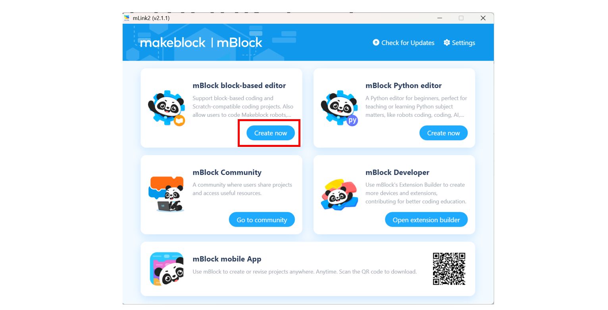
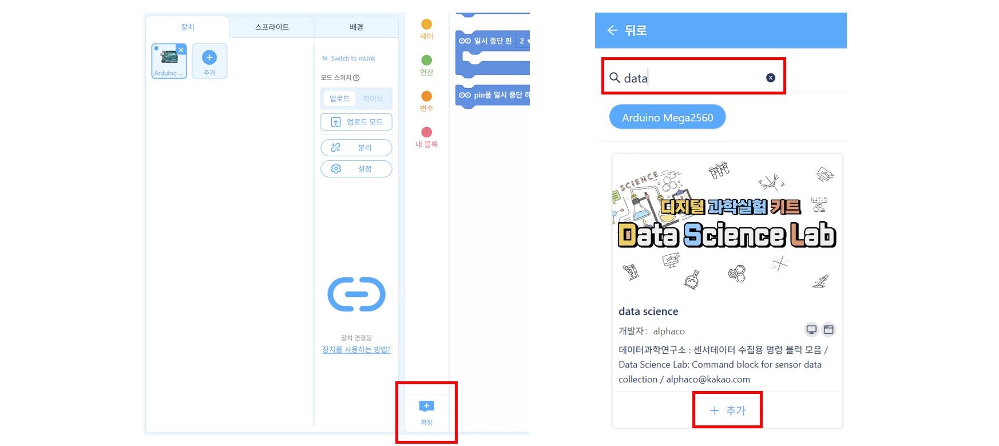
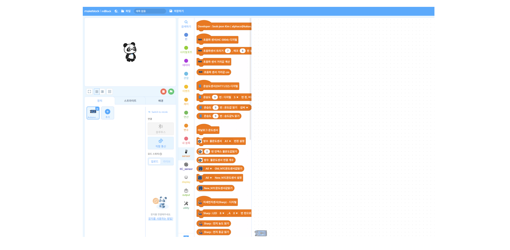
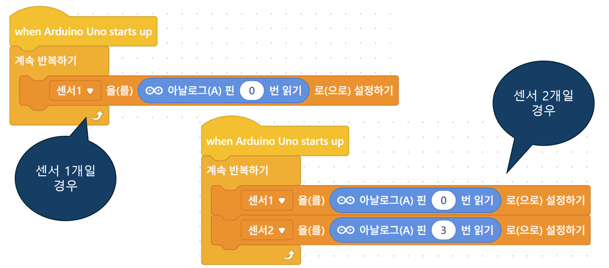
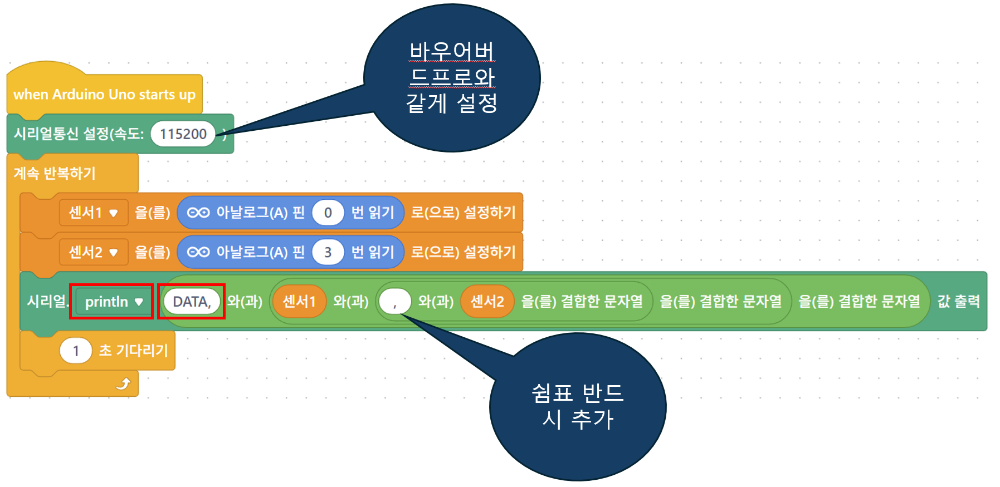
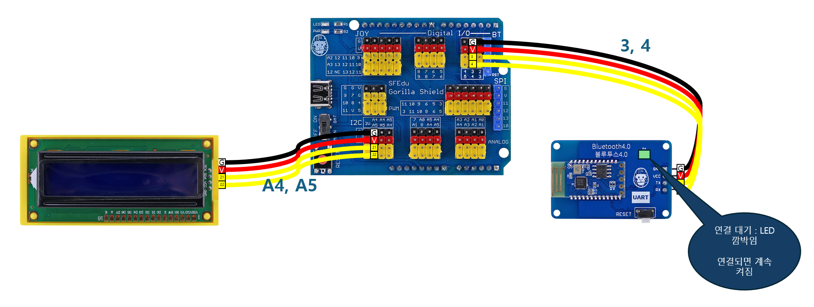

🐦 BOWERBIRDPRO 통합 가이드
실시간 데이터 로거 & 플로터 사용 매뉴얼
목차
1. 프로그램 소개
BOWERBIRDPRO는 다양한 MCU(아두이노, 마이크로비트, ESP32, PICO)와 유/무선으로 연결하여 센서 데이터를 실시간으로 수집, 시각화, 저장하는 웹 기반 데이터 로거입니다.
🐦 바우어버드 브랜드 의미
정원새 바우어버드가 각종 물건을 수집해 아름다운 둥지를 만들듯, 센서 데이터를 정교하게 수집하고 시각화합니다.
🌐 주요 특징
- • 17개 언어 지원
- • 실시간 데이터 시각화
- • 최대 10개 센서 동시 모니터링
- • CSV 파일 자동 저장
📡 지원 통신
- • 시리얼 통신 (USB, UART)
- • 블루투스 LE (BLE)
- • SPP 블루투스
- • 자동 장치 인식
2. 접속 방법
BOWERBIRDPRO는 웹 브라우저에서 바로 사용할 수 있습니다.
🔗 웹 버전 접속
💾 윈도우 설치 버전
오프라인 환경에서도 사용 가능한 설치 버전을 다운로드할 수 있습니다.
3. 시스템 구조
BOWERBIRDPRO의 전체 시스템 아키텍처는 다음과 같습니다:
-
1.
센서 연결: 온도, 습도, 조도, 거리 등 다양한 센서를 MCU에 연결
-
2.
MCU 프로그래밍: mBlock(아두이노) 또는 MakeCode(마이크로비트)로 코딩
-
3.
데이터 전송: 시리얼 또는 블루투스로 PC에 데이터 전송
-
4.
시각화 및 저장: BOWERBIRDPRO에서 실시간 그래프 표시 및 CSV 저장
-

⚠️ 데이터 형식
예시 (3개 센서): DATA,25.5,1023.1,75.0
4. 아두이노 설정
아두이노를 사용하여 센서 데이터를 수집하는 방법입니다.
하드웨어 연결
필요한 부품
- • 아두이노 우노 (또는 호환 보드)
- • 고릴라셀 실드 (선택사항)
- • 센서 (초음파, 온습도, 조도 등)
- • LCD 디스플레이 (선택사항)
센서 연결 예시
- • 초음파센서: D7(Trig), D8(Echo)
- • DHT11: D4
- • BMP280: A4(SDA), A5(SCL)
- • 아날로그 센서: A0~A5
mBlock 코딩
1. mBlock 실행 및 장치 추가
- • 웹에서 'mBlock'으로 검색하여 접속
- • mLink 다운로드
- • mLink를 통해 웹에디터로 연결 
- • 장치연결 – 웹시리얼 포트 선택


2. 확장 블록 추가
- • 확장 센터에서 'data'로 검색 
- • '다양한 센서를 블록명령으로 제어할 수 있는 Data Science Lab' 확장 
3. 시리얼 통신 설정
- • 아날로그 센서값 변수에 저장 코드블록 
- • 센서 2개일 경우 전송 명령 추가 
4. 블루투스 통신 설정
- • 아두이노 블루투스 회로구성 
- • PC에서 블루투스 장치 추가
- • 블루투스 장치 등록확인
- • 등록한 장치의 COM포트 확인하기
- • mBlock에서 장치의 COM포트 연결하기
- • 블루투스로 센서값 전송 코드 작성


5. 마이크로비트 설정
마이크로비트를 사용하여 센서 데이터를 수집하는 방법입니다.
하드웨어 연결
- • 마이크로비트 + 확장 실드
- • LCD: 3.3V지원 여부 체크, I2C 연결 (P19:SDA, P20:SCL)
- • 센서: 디지털/아날로그 핀에 연결
- • 전원: USB 또는 배터리 팩
MakeCode 코딩
시리얼 통신 코드
블루투스 통신 코드
6. 프로그램 사용법
BOWERBIRDPRO의 주요 기능과 사용 방법을 설명합니다.
메인 화면 구성
연결 설정 영역
- • 언어 선택 (17개 언어)
- • 통신 유형 (시리얼/블루투스)
- • 포트 및 속도 설정
- • 연결 버튼
센서 설정 영역
- • 센서 개수 (1~10개)
- • 센서 이름 설정
- • 그래프 색상 자동 지정
- • 실시간 값 표시
데이터 수집 절차
- 1단계: 언어와 통신 방식 선택
- 2단계: 장치 연결 (시리얼 포트 또는 블루투스) - 데이터 로그 시작
- 3단계: 센서 개수 및 이름 설정
- 4단계: "시작" 버튼 클릭하여 데이터 수집 시작 - 그래프 출력시작
- 5단계: 실시간 그래프 확인 및 필요시 일시정지/재개
- 6단계: "정지" 버튼으로 종료 및 CSV 파일 자동 저장
7. 시리얼 통신
USB를 통한 유선 연결 방법입니다.
아두이노 시리얼 연결
- 1. 아두이노를 USB로 PC에 연결
- 2. 장치관리자에서 COM 포트 확인
- 3. BOWERBIRDPRO에서 해당 COM 포트 선택
- 4. 보드레이트 설정 (기본: 9600), 센서가 여러개일 경우 '115200' 선택
- 5. "시리얼 연결" 버튼 클릭
마이크로비트 시리얼 연결
- 1. 마이크로비트를 USB로 연결
- 2. 자동으로 인식되는 COM 포트 확인
- 3. 보드레이트 9600 설정, 센서가 여러개일 경우 '115200' 선택
- 4. 연결 후 데이터 수신 확인
💡 팁
시리얼 통신은 안정적이고 빠른 데이터 전송이 가능하여 많은 센서를 사용할 때 권장됩니다.
8. 블루투스 통신
무선으로 데이터를 전송하는 방법입니다.
아두이노 블루투스 (SPP)
JDY-33 모듈 연결
- • TX → 아두이노 D3
- • RX → 아두이노 D4
- • VCC → 5V, GND → GND
- • PC와 페어링 (PIN: 1234)
- • 소프트웨어 시리얼 사용
마이크로비트 블루투스 (BLE)
내장 BLE 사용
- • MakeCode에서 Bluetooth 확장 추가
- • UART 서비스 시작
- • BOWERBIRDPRO에서 "BLE 장치 스캔"
- • 장치 선택 후 연결

⚠️ 주의사항
블루투스는 전송 속도가 제한적이므로 센서가 많을 경우 데이터가 분할 전송될 수 있습니다. 4개 이상의 센서 사용 시 시리얼 통신을 권장합니다.
9. 데이터 분석
수집된 데이터를 분석하고 활용하는 방법입니다.
실시간 그래프 기능
그래프 표시
- • X축: 시간 (시:분:초)
- • Y축: 센서 값 (자동 범위)
- • 최대 300개 데이터 포인트
- • 실시간 업데이트
그래프 제어
- • 센서별 표시/숨김 토글
- • 일시정지/재개 기능
- • 범례로 센서 구분
- • 각 센서별 고유 색상

CSV 파일 활용
저장 형식
2025.7.28,23:33:19.602,0,313
2025.7.28,23:33:19.759,4,349
2025.7.28,23:33:19.914,0,327
파일명: Bowerbird_PRO_datalog_날짜_시간.csv
데이터 분석 도구
- • Excel: 기본적인 그래프 및 통계 분석
- • Orange3: 시각적 데이터 분석
- • Python: pandas, matplotlib 활용
- • Google Sheets: 온라인 협업 분석
10. 문제 해결
자주 발생하는 문제와 해결 방법입니다.
연결 문제
- 문제: 시리얼 포트가 표시되지 않음
- 해결: 드라이버 설치, USB 케이블 교체, 장치관리자 확인
데이터 수신 문제
- 문제: 데이터가 깨져서 표시됨
- 해결: 보드레이트 확인, 데이터 형식 확인 (DATA,값1,값2...)
블루투스 연결 실패
- 문제: BLE 장치가 검색되지 않음
- 해결: 블루투스 활성화, 페어링 재시도, 거리 확인
💡 디버깅 팁
- 1. 콘솔 로그에서 오류 메시지 확인
- 2. 시리얼 모니터로 원시 데이터 확인
- 3. 센서 연결 상태 점검
- 4. 전원 공급 상태 확인
11. 소스코드 다운로드
예제 코드와 추가 자료를 다운로드할 수 있습니다.
예제 코드 링크
마이크로비트 시리얼 통신
MakeCode 프로젝트 열기마이크로비트 블루투스 통신
MakeCode 프로젝트 열기12. 지원 및 문의
BOWERBIRDPRO 사용 중 도움이 필요하신 경우 아래로 연락 주세요.
👨💻 개발자 정보
개발자
김석전 (alphaco)
버전
BOWERBIRDPRO_V1
연락처
alphaco@kakao.com / doolbat@naver.com
관련 사이트
- • gorillacell.kr - 고릴라셀 공식 사이트
- • brixel.kr - 브릭셀 교육 플랫폼